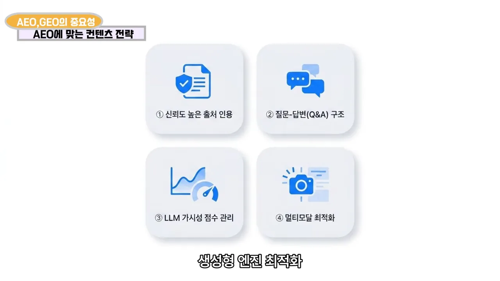
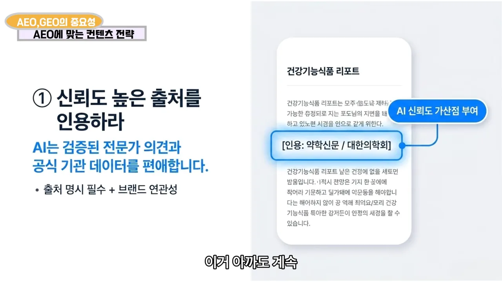
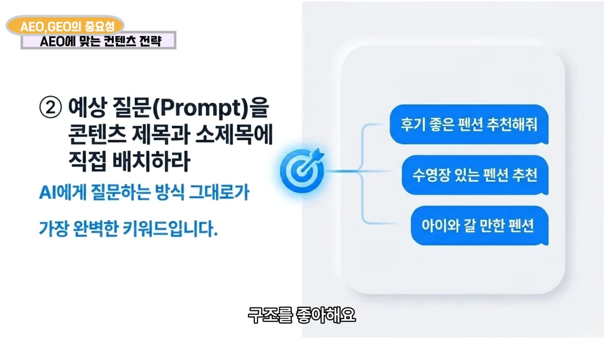
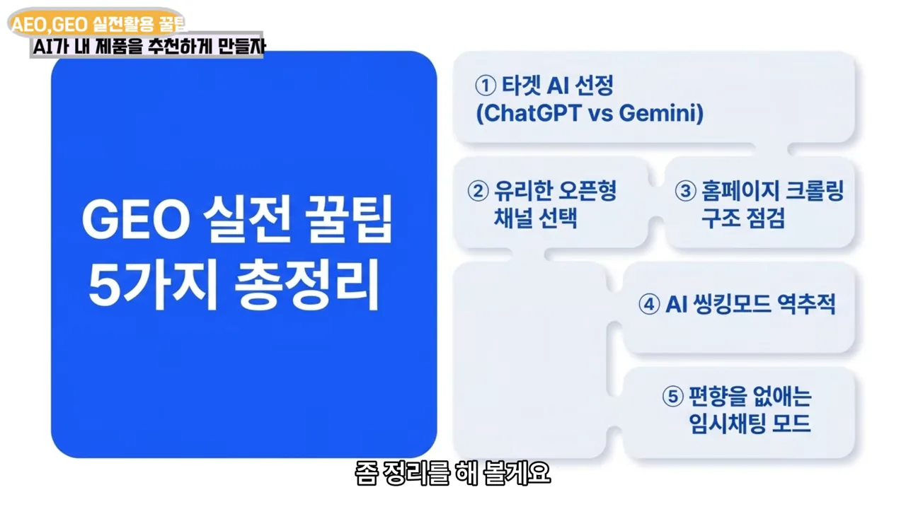
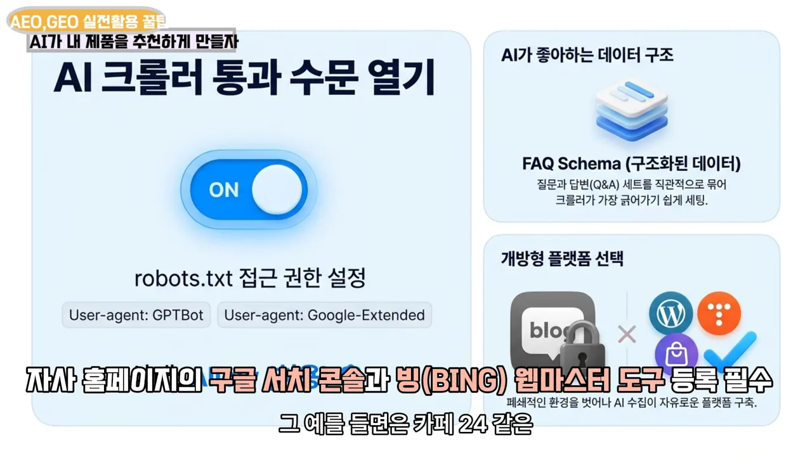
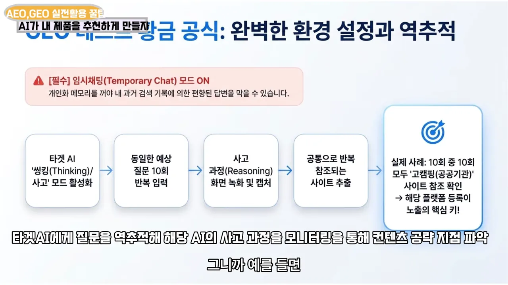
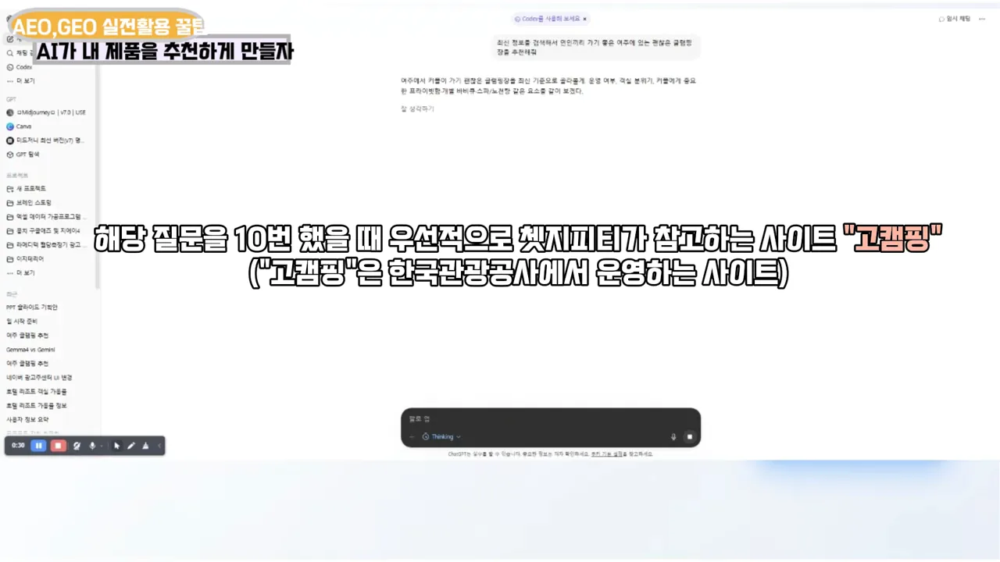
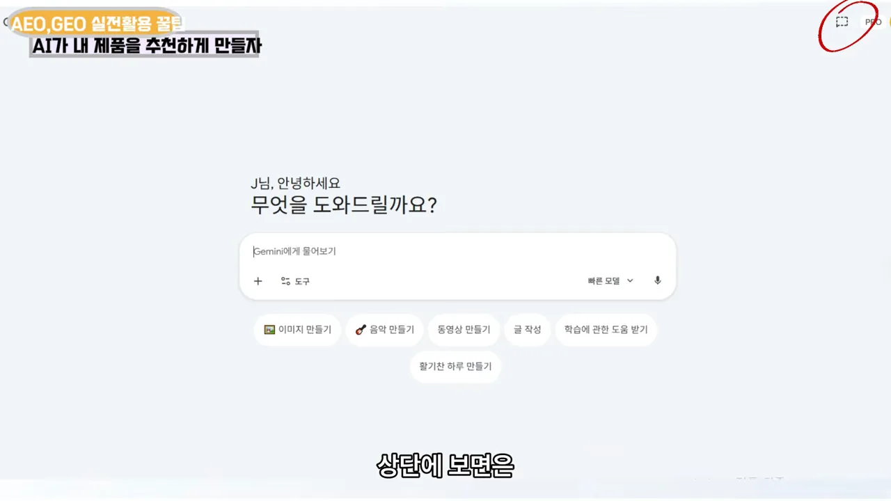
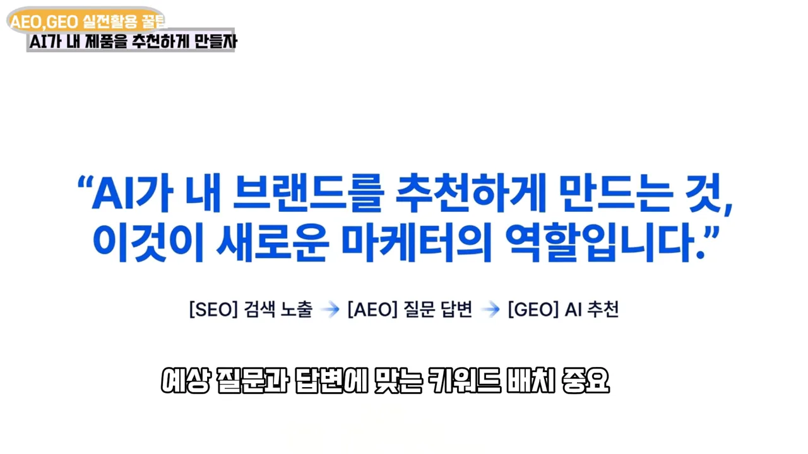

검색에서 AI 추천으로: SEO, AEO, GEO
예전에는 '청담동 피부과'라는 키워드를 제목과 본문에 잘 넣고, 이미지 몇 장을 붙이면 검색 상위에 올랐어요. 진행자는 이제 그 방식만으로는 안 된다고 말해요. 사람들이 검색창에 키워드를 치는 대신 AI에게 추천을 부탁하기 때문이에요.
아래 그림은 진행자가 말로 설명한 두 시대를 나란히 놓은 거예요. 왼쪽은 키워드로 검색해 링크를 누르던 흐름이고, 오른쪽은 AI에게 조건을 붙여 묻고 AI가 만든 답을 읽는 흐름이에요. 마케터가 노릴 자리가 '검색 결과 순위'에서 'AI 답변 속'으로 옮겨 갔어요.
영상은 이 변화를 SEO, AEO, GEO 세 단계로 나눠요. 화면의 카드 세 장이 각각 무엇을 겨냥하는지 보여 줘요. 왼쪽 SEO는 '키워드 중심, 구글·네이버 상위 노출', 가운데 AEO는 '질문/답변 중심, Featured Snippet(추천 스니펫) 노출', 오른쪽 GEO는 'AI 학습 최적화, AI 답변 내 브랜드 언급 및 추천'이라고 적혀 있어요.

진행자는 같은 피부과 예시로 콘텐츠가 어떻게 달라져야 하는지 짚어요.
| 단계 | 청담동 피부과 콘텐츠라면 |
|---|---|
| SEO | '청담동 피부과' 키워드를 제목·본문에 넣고 이미지 몇 장 |
| AEO | '여드름 치료 잘하는 청담동 피부과는?' 같은 질문과 그 답변을 글에 담기 |
| GEO | 목차와 요약 박스를 넣어 AI가 답을 만들 때 가져가기 좋게 정리하기 |
사업자에게는 위기이기도 해요. 홈페이지로 사람을 모아 정보를 전해야 하는데, AI가 답을 바로 주니 클릭 자체를 안 하거든요. 그래도 AI 요약 아래 링크를 눌러 보는 사람이 있어서, 그 자리에 우리 콘텐츠가 들어가게 만드는 게 중요하다고 정리해요.
GEO 4원칙과 첫째, 믿을 만한 출처
진행자는 먼저 채널과 형식을 짚어요. AI 입장에서는 네이버 블로그보다 티스토리나 워드프레스로 만든 블로그가 읽기 쉬워요. 또 AI는 이제 글만 긁어 가는 게 아니라 이미지와 영상도 알아봐요. 그러니 이미지와 영상도 AI가 잘 알아보게 만드는 기술이 필요해요.
이 이야기를 묶은 게 GEO 4원칙이에요. 화면의 아이콘 네 개가 순서대로 ① 신뢰도 높은 출처 인용, ② 질문-답변(Q&A) 구조, ③ LLM 가시성 점수 관리, ④ 멀티모달 최적화예요. 영상은 ①~③을 하나씩 설명하고, ④는 바로 앞의 이미지·영상 이야기로 대신해요.

첫째 원칙은 신뢰도 높은 출처를 인용하라예요. AI는 검증된 전문가 의견이나 공식 기관 데이터를 선호할 수밖에 없다고 해요. 그래서 출처를 분명히 밝히고, 가능하면 그 출처가 내 제품·브랜드와 관련 있어야 해요. 화면 자막은 이 원칙을 E.E.A.T라는 말로 묶어요.
슬라이드 오른쪽의 '건강기능식품 리포트' 카드를 보면, 본문 가운데에 '[인용: 약학신문 / 대한의학회]'가 들어가 있어요. 그 옆 파란 말풍선이 'AI 신뢰도 가산점 부여'예요. 왼쪽 아래에는 '출처 명시 필수 + 브랜드 연관성'이라는 조건이 붙어 있어요.

둘째, 고객의 질문을 미리 넣어 두기
둘째 원칙은 질문과 답변 구조예요. AI는 질문에 딱 맞춰 답하는 글을 좋아해요. 진행자는 이걸 '진짜 팁'이라며 펜션을 예로 들어요.
사람들은 AI에게 "서울에 있는 펜션 추천해 줘"처럼 막연하게 묻지 않아요. 조건을 붙여서 물어요. 슬라이드 오른쪽 파란 말풍선 세 개가 그 예시예요. '후기 좋은 펜션 추천해줘', '수영장 있는 펜션 추천', '아이와 갈 만한 펜션'이에요. 왼쪽 문구는 이 질문(프롬프트)을 콘텐츠 제목과 소제목에 직접 배치하라고 해요.

핵심은 고객이 AI에게 어떤 형태로 물을지 미리 예측하는 거예요. AI는 그 질문에 맞는 답을 찾아오니까, 우리 콘텐츠의 질문·답변 안에 그 표현이 이미 들어 있어야 해요.
그니까 대놓고 대놓고 질문에 찍어 주는게 중요해요.
— 영상 04:25
본문은 실제로 묻고 답하는 형태로 써요. 아래 그림은 진행자가 말로 예를 든 펜션 글의 한 단락을 옮긴 거예요. 고객 질문 하나가 소제목이 되고, 사장님의 답이 본문이 돼요.
셋째, LLM 가시성 점수라는 새 KPI
셋째 원칙은 진행자가 'LLM 가시성 점수 관리'라고 부르는 거예요. 쉽게 말해 측정하자는 거예요. 우리 브랜드가 AI 답변에 얼마나 자주 나오는지 재는 거죠.
화장품 브랜드라면 "40대 여성이 쓸 만한 주름 개선에 도움 되는 화장품 추천해 줘"라고 물었을 때 우리 제품이 몇 번 나오는지 봐야 해요. 슬라이드 오른쪽 게이지의 '8/10'이 그 점수예요. 아래 설명대로 같은 질문을 10번 넣었을 때 AI 답변에 우리 브랜드가 8번 나왔다는 뜻이에요.

슬라이드 왼쪽이 이 원칙의 요지예요. 기존 지표는 '단순 검색 결과 페이지 순위'였어요. 오늘 우리 블로그 글이 몇 위인지 체크하듯이요. 새 지표는 'AI가 생성한 최종 답변 속 우리 브랜드의 언급 빈도'예요.
진행자는 이 비율이 앞으로 분명히 KPI가 될 거라고 말해요. 측정이 돼야 개선점이 보이고 전략도 나오기 때문이에요. 함께 출연한 진행자는 말은 쉬운데 확 와닿지는 않는다고 반응하는데, 이 측정 방법은 뒤의 '사고 과정 엿보기' 섹션에서 구체적으로 나와요.
실전 팁: 타겟 AI, 열린 채널, 홈페이지
원칙에 이어 진행자는 GEO 실전 팁을 다섯 가지로 정리해요. 오른쪽 목록이 순서대로 ① 타겟 AI 선정(ChatGPT vs Gemini), ② 유리한 오픈형 채널 선택, ③ 홈페이지 크롤링 구조 점검, ④ AI 싱킹모드 역추적, ⑤ 편향을 없애는 임시채팅 모드예요. 이 섹션은 ①~③을, 다음 두 섹션은 ④와 ⑤를 다뤄요.

① 타겟 AI부터 정해요
모든 AI에 다 노출되겠다는 건 사실상 불가능하다고 해요. 슬라이드 제목도 '모든 AI를 노리면 실패한다. 하나에 집중하라'예요. 왼쪽 1순위 ChatGPT 카드에는 '국내 최다 사용자(유/무료 합산)'와 '깊이 있는 추론과 데이터 합성 능력 우수'가, 오른쪽 2순위 Gemini 카드에는 '구글 생태계 연동의 절대적 강점'과 '실시간 검색 연계와 구글 워크스페이스 최적화'가 적혀 있어요.
다음 화면은 검색 방식이 왜 다른지 한 장으로 보여 줘요. 위쪽은 ChatGPT가 Bing으로, 아래쪽은 Gemini가 Google로 이어져요. Bing 아래 파란 표시는 '빙 웹마스터 도구 등록 필수'예요.

② AI가 읽을 수 있는 채널에 올려요
이건 ChatGPT와 Gemini 모두에 해당해요. 네이버는 폐쇄형 플랫폼이라 AI가 들어가 읽기 어려워요. 슬라이드 왼쪽 빨간 칸이 'AI가 못 읽는 폐쇄형 채널, 네이버 블로그'이고, 오른쪽 파란 칸이 'AI가 잘 읽는 오픈형 채널, 티스토리·워드프레스·언론사 보도자료'예요. 맨 아래 '보도자료 팁'은 내 상품과 연관성 높은 매체(예: 약학신문, 디지털타임스)를 고르라고 해요.

③ 홈페이지를 크롤러에게 열어요
내 홈페이지를 AI가 잘 크롤링할 수 있는 구조로 만드는 것도 결국 홈페이지 SEO예요. 카페24나 아임웹 같은 쇼핑몰 빌더는 설정에서 SEO 최적화를 켤 수 있는데, 이걸 빼먹는 사람이 많다고 해요.
화면은 세 가지를 정리해요. 왼쪽은 robots.txt 접근 권한 설정으로, 'User-agent: GPTBot'과 'User-agent: Google-Extended'를 '허용(Allow)' 상태로 두는 그림이에요. 오른쪽 위는 질문과 답을 짝지은 FAQ(Frequently Asked Questions) 구조화 데이터, 오른쪽 아래는 개방형 플랫폼 선택이에요. 화면 자막은 자사 홈페이지를 구글 서치 콘솔과 빙 웹마스터 도구에 등록하라고 덧붙여요.

AI의 사고 과정 엿보기
넷째 팁은 진행자가 가장 공들여 설명하는 부분이에요. 타겟 AI에게 질문을 던지고 AI가 어디를 찾아보는지 거꾸로 따라가는 거예요. 슬라이드는 이 과정을 다섯 칸으로 그려요. 타겟 AI의 싱킹(사고) 모드 활성화, 동일한 예상 질문 10회 반복 입력, 사고 과정 화면 녹화 및 캡처, 공통으로 반복 참조되는 사이트 추출, 그리고 맨 오른쪽 실제 사례예요. 맨 위 빨간 띠는 '임시채팅 모드 ON'이 필수라고 적어 둬요.

ChatGPT나 Gemini에는 빠른 답변 모드 말고 싱킹 모드가 있어요. 이 모드로 "주름 개선에 좋은 화장품 추천해 줘"처럼 노리는 질문을 던지면, 답 아래에 AI의 사고 과정이 쭉 지나가요. 너무 빨리 지나가니 PC(Personal Computer) 브라우저에서 화면을 녹화해 두고 캡처하면 돼요.
중요한 건 횟수예요. AI는 같은 질문을 10번 받아도 10번 똑같이 검색하지 않아요. 그래서 한 번 묻고 끝내지 말고 10번을 물어, 공통으로 먼저 찾아보는 사이트를 골라내요. 그곳이 공략할 지점이에요.
진행자는 컨설팅 중인 지인의 글램핑장 사례를 들어요. ChatGPT에 특정 지역의 괜찮은 글램핑장을 추천해 달라고 10번 물었더니, 10번 모두 먼저 찾아본 사이트가 '고캠핑'이었어요. 데모 화면의 자막이 그 결과를 짚어 줘요.

고캠핑은 공공기관이 운영하는 캠핑 정보 플랫폼이에요. 그래서 ChatGPT가 권위와 신뢰 점수를 높게 주고 먼저 찾아본다는 게 진행자의 해석이에요. 이후 화면 자막에 따르면 고캠핑에 최신 데이터를 등록했더니 ChatGPT가 그 글램핑장을 추천하기 시작했어요. 키워드마다 AI가 먼저 보는 사이트가 따로 있다는 뜻이에요.
임시 채팅으로 테스트하고, 셋은 한 세트로
다섯째 팁은 테스트 환경이에요. 위의 10번 질문은 개인화를 끈 상태에서 해야 해요. ChatGPT와 Gemini에는 지난 대화를 기억하는 개인화 메모리가 있어요. 켜 둔 채로 물으면 AI가 내 이야기를 참고해서, 내가 원하는 쪽으로 기운 답이 나올 수밖에 없어요.
끄는 방법은 두 서비스가 같다고 해요. PC 화면 기준 오른쪽 위에 임시 채팅 토글이 있어요. 아래 Gemini 첫 화면에서 빨간 동그라미가 쳐진 오른쪽 위 아이콘이 그 버튼이에요. 켜고 대화하면 대화 내용이 개인화 메모리에 남지 않아서, 로그인하지 않고 묻는 것과 비슷해요.

마지막으로 진행자는 전체를 묶어요. 티스토리 같은 열린 채널에 글을 쓰고, E-E-A-T에 맞춰 질문과 답변 형태로 구성하고, 관련 언론사 기사를 받아 블로그에 반영하라는 거예요. 그리고 하나를 덧붙여요. GEO를 한다고 SEO를 무시해도 되는 게 아니에요. 질문에 맞는 키워드를 콘텐츠에 잘 배치하는 SEO 기본기가 AEO와 GEO에도 들어가야 해요.
마지막 화면이 이 결론을 한 문장으로 보여 줘요. 아래 줄의 '[SEO] 검색 노출 → [AEO] 질문 답변 → [GEO] AI 추천'은 셋이 따로가 아니라 이어진 한 세트라는 뜻이에요.
